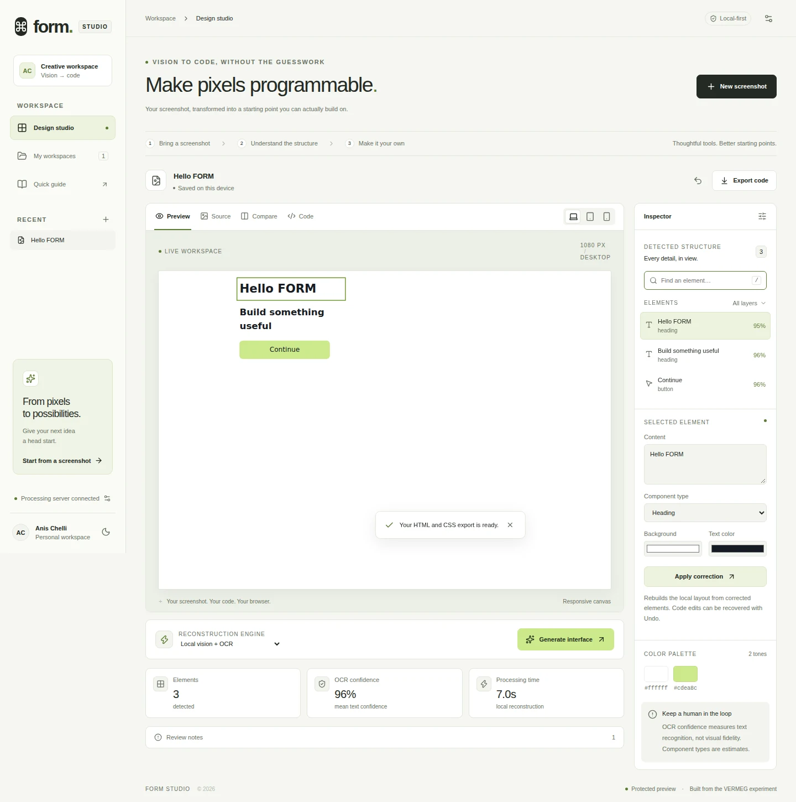
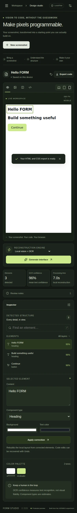

See what the system saw.
Source overlays and a searchable inspector connect extracted text to the screenshot. Correct an element, regenerate its structure and Undo the complete reconstruction change.
01 / FORM · VISION TO CODE
FORM turns interface screenshots into editable HTML and CSS. Inspect what was detected, correct the details, compare your result and take the code with you.

Light theme · captured after screenshot upload, OCR, correction, Undo and export. Theme controls switch between real captures.
THE PRODUCT DECISION
OCR and generated markup need human review. The rebuild makes that review the center of the product: source and output side by side, detected elements you can inspect, and a workspace that keeps your changes.
Source overlays and a searchable inspector connect extracted text to the screenshot. Correct an element, regenerate its structure and Undo the complete reconstruction change.
Edit HTML and CSS, compare the original with the reconstruction, and preview desktop, tablet and mobile widths in an isolated canvas.
IndexedDB autosave, named workspaces and validated JSON backups protect progress. Code editing and workspace backup remain available when the processing server is offline.
The Python service sanitizes generated markup and CSS before packaging an HTML/CSS ZIP. Local OCR works without a paid model API; an Ollama vision provider is optional.
ENGINEERING / MEASURED
Typed API boundaries, bounded image processing and a shared CLI/API pipeline replace the original collection of scripts. An unprivileged Docker image provides a repeatable runtime.
Upload byte and pixel limits, a bounded worker queue, request deadlines and actionable errors keep processing controlled.
Operator-key protection, origin and host checks, sanitized exports and sandboxed previews cover the current local deployment model.
Real PNG → OCR → correction → full Undo → ZIP. Browser checks also cover persistence, backup validation, offline editing and a 390px viewport.
SMALL SCREEN / SAME WORKSPACE
Responsive navigation, readable inspector fields, keyboard tabs and reduced-motion support carry the studio across screen sizes. Light and dark themes share a consistent component system.
Actual 390px Chromium capture. Physical devices, other browser engines and full accessibility compliance still need independent verification.

ORIGIN & CURRENT SCOPE
The July–August 2024 VERMEG internship produced the initial screenshot-to-code prototype. The September 2026 personal rebuild added the studio interface, typed backend, workspace persistence, security boundaries and automated verification shown here.
This portfolio page shows the verified application; run the complete studio locally or in Docker using the repository instructions. The current backend is a bounded, single-process tool for a trusted operator. Live Ollama generation and production load are unverified; multi-user hosting needs identity, tenant isolation and durable jobs.